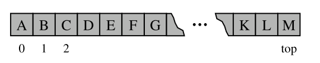

Chapter 6.1 - Stacks
A stack is a collection of objects that are inserted and removed according to the last-in, first-out (LIFO) principle.
- May only access or remove the most recently inseted object that remains (at the so-called 'top' of the stack)
Stack Data Type
Formally, a stack is an abstract data type (ADT) such that an instance S supports the following two methods:
S.push(e)Add an elementeto the top of stackS.pop(): Remove and return the top element from the stackS; an error occurs if the stack is empty
Accessor methods for convenience:
S.top(): Return a reference to the top element of stack S, without removing it; an error occurs if the stack is empty.S.is_empty(): Return True if stack S does not contain any elements.len(S): Return the number of elements in stack S; in Python, we implement this with the special method__len__.
Simple Array-based Stack implementation
Implement a stack quite easily, aligning the top of the stack at the end of the list.

Adapter Pattern
The Adapter design pattern applied tto any context where we effectively want to modify an existing class so that its methods match those of a related, but different, class or interface.
- Apply an adapter pattern by defining a class in such a way that it contains an instance of the existing class as a hidden field, and iimplement each method of the new class using methods of this hidden instance variable
| Stack Method | Realisation with Python list |
|---|---|
S.push(e) |
L.append(e) |
S.pop() |
L.pop() |
S.top() |
L[-1] |
S.is_empty() |
len(L)==0 |
len(S) |
len(L) |
We use the adapter desing pattern to define an ArrayStack that uses an underlying Python list for storage
- Use word
ArrayStackto emphasize that the underlying storage is inherently Array based - when
popis called on an empty Python list, it formally raises andIndexerror, but this does not seem appropriate for a stack - define a new exception class that is more appropriate
Usage example
S = ArrayStack( ) # contents: [ ]
S.push(5) # contents: [5]
S.push(3) # contents: [5, 3]
print(len(S)) # contents: [5, 3]; outputs 2
print(S.pop()) # contents: [5]; outputs 3
print(S.is empty()) # contents: [5]; outputs False
print(S.pop()) # contents: [ ]; outputs 5
print(S.is empty()) # contents: [ ]; outputs True
S.push(7) # contents: [7]
S.push(9) # contents: [7, 9]
print(S.top()) # contents: [7, 9]; outputs 9
S.push(4) # contents: [7, 9, 4]
print(len(S)) # contents: [7, 9, 4]; outputs 3
print(S.pop()) # contents: [7, 9]; outputs 4
S.push(6) # contents: [7, 9, 6]
Class implementation
class ArrayStack:
"""LIFO Stack implementation using a Python list as underlying storage."""
def init (self):
"""Create an empty stack."""
self. data = [ ] # nonpublic list instance
def len (self):
"""Return the number of elements in the stack."""
return len(self. data)
def is empty(self):
"""Return True if the stack is empty."""
return len(self. data) == 0
def push(self, e):
"""Add element e to the top of the stack."""
self. data.append(e) # new item stored at end of list
def top(self):
"""Return (but do not remove) the element at the top of the stack.
Raise Empty exception if the stack is empty.
"""
if self.is empty():
raise Empty( Stack is empty )
return self. data[−1] # the last item in the list
def pop(self):
"""Remove and return the element from the top of the stack (i.e., LIFO).
Raise Empty exception if the stack is empty.
"""
if self.is empty():
raise Empty( Stack is empty )
return self. data.pop( ) # remove last item from list
Efficiency for stack-based implementation
| Operation | Running Time |
|---|---|
S.push(e) |
|
S.pop() |
|
S.top() |
|
S.is_empty() |
|
len(S) |
Reversing data using a stack
As a consequence of the LIFO protocol, a stack can be used as a general tool to reverse a data sequence.
- Example, print lines in reverse order
- Read each line and push it onto the stack, and then writing the lines in the order they are popped.
def reverse file(filename):
'''Overwrite given file with its contents line-by-line reversed.'''
S = ArrayStack()
original = open(filename)
for line in original:
S.push(line.rstrip( '\n' )) # we will re-insert newlines when writing
original.close()
# now we overwrite with contents in LIFO order
output = open(filename, w ) # reopening file overwrites original
while not S.is empty():
output.write(S.pop( ) + '\n' ) # re-insert newline characters
output.close()
- We intentionally strip trailing newlines from lines as they are read, and then re-insert newlines after each line when writing the resulting file.
Example: Algorithm for matching delimiters
- Take arithemtic expressions and their delimeters, i.e. '([{' and '}])' respectively.
- Example: ()(()){([()])} correct implementation
- Example: )(()){([()])} incorrect implementation
- The following python implementation can determin whether all delimiters properly match
def is matched(expr):
"""Return True if all delimiters are properly match; False otherwise. """
lefty = '({[' # opening delimiters
righty = ')}]' # respective closing delims
S = ArrayStack()
for c in expr:
if c in lefty:
S.push(c) # push left delimiter on stack
elif c in righty:
if S.is empty():
return False # nothing to match with
if righty.index(c) != lefty.index(S.pop()):
return False # mismatched
return S.is empty( ) # were all symbols matched?
Queues
- Similar to a stack, but follows a FIFO principle
- Elements can be inserted in at any time, but only the element that has been in the queue the longest can be next removed.
- A metaphor for this is people waiting in line to get on an amusement ride